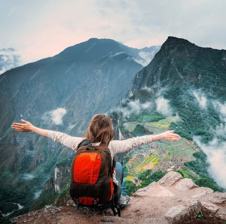

Conoce el mundo
Si tu sueño siempre ha sido viajar por el mundo has llegado al lugar correcto.
No importa si eres mujer u hombre, tienes 15 o 90 años, estudias o trabajas, viajas solo o con tu familia, aquí encontrarás todo lo que necesitas saber para hacer tu sueño realidad, desde unas vacaciones familiares hasta un viaje sin fecha de regreso.
Viajar no es una actividad que esté limitada para los ricos, es algo que todos podemos hacer si realmente nos lo proponemos.
El mundo es un lugar enorme que merece la pena ser explorado y aquí estamos nosotros para ayudarte.
Bienvenido a Tu Viaje por el Mundo.
¿Que necesitas?

Déjame presentarte el kit perfecto para tu aventura mundial! Imagina un viaje lleno de emocionantes descubrimientos y experiencias inolvidables. Aquí tienes todo lo que necesitas para hacer realidad ese sueño:
1. Pasaporte y visas: Son tu boleto para explorar el mundo. Con ellos, podrás abrir las puertas de nuevos horizontes y sumergirte en culturas fascinantes.
2. Billetes de avión: Tu pasaje hacia destinos exóticos y paisajes impresionantes. ¡Es hora de volar alto y descubrir lo que el mundo tiene reservado para ti!
3. Seguro de viaje: Un guardián de tranquilidad que estará contigo en cada paso del camino. Te protegerá ante cualquier imprevisto y te permitirá viajar con total seguridad y confianza.
4. Documentos de viaje: Tu arsenal de información vital. Estos documentos te ayudarán a navegar por tu aventura sin problemas y a mantener todo en orden.
5. Dinero: La llave que abre las puertas de la diversión y la comodidad en tu viaje. Asegúrate de llevar suficiente para disfrutar al máximo y para cualquier emergencia que pueda surgir.
6. Equipo de viaje: Tu fiel compañero en todas tus aventuras. Desde tu maleta resistente hasta los pequeños detalles como adaptadores de corriente, ¡todo está diseñado para hacer tu viaje más cómodo y emocionante!
7. Ropa adecuada: Tu estilo personalizado para cada destino. Desde la playa hasta la montaña, asegúrate de llevar contigo la ropa adecuada para cada ocasión y estarás listo para cualquier aventura que se te presente.

8. Botiquín de primeros auxilios: Tu kit de tranquilidad en caso de cualquier percance. Con él, estarás preparado para cualquier eventualidad y podrás disfrutar de tu viaje con total confianza.
9. Kit de higiene personal: Tu secreto para mantenerte fresco y listo para cualquier desafío. ¡No olvides empacar tus artículos esenciales para sentirte siempre en tu mejor estado!
10. Dispositivos electrónicos: Tus herramientas para capturar cada momento especial. Desde tu teléfono móvil hasta tu cámara, ¡estos dispositivos te ayudarán a preservar tus recuerdos más preciados!
11. Mapas y guías de viaje: Tus aliados en la exploración. Con ellos, podrás encontrar tu camino en cualquier lugar del mundo y descubrir los tesoros que cada destino tiene para ofrecer.
12. Idioma: Tu puente hacia nuevas conexiones y amistades. Aprende algunas frases básicas del idioma local y verás cómo se abrirán puertas y corazones en cada lugar que visites.